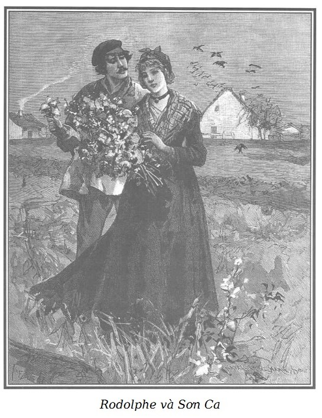

Sáng hôm sau, mặt trời rực rỡ của mùa thu chói sáng trên bầu trời trong xanh, bão táp ban đêm đã dứt hẳn. Mặc dù luôn luôn âm u vì những tòa nhà cao, khu phố gớm ghiếc đêm qua hình như đã giảm vẻ đáng sợ trước ánh sáng của một ngày đẹp trời.
Hoặc là Rodolphe không sợ gặp lại hai người mà ông đã tránh mặt lúc đêm, hoặc là bất chấp việc ấy, khoảng một giờ trưa ông lại đến phố Hàng Đậu và đi về phía quán của mụ Ponisse.
Rodolphe vẫn ăn mặc như mọi người nhưng kiểu cách hơn, áo khoác mới hở ngực phô áo trong bằng len đỏ cài nhiều cúc bạc; ve áo sơ mi vải trắng bẻ gập trên cà vạt lụa đen thắt hờ hững quanh cổ. Từ chiếc mũ kết bằng nhung xanh da trời có lưỡi trai bóng xõa xuống một vài lọn tóc màu hạt dẻ, đôi ủng đánh xi bóng loáng thay thế đôi giày thô đinh sắt hồi đêm làm nổi bật đôi chân hình như quá nhỏ trong ống quần rộng bằng nhung màu xanh ô liu.
Cách ăn mặc như vậy không làm giảm bớt vẻ lịch sự trong dáng dấp của Rodolphe, đó là sự kết hợp hài hòa của duyên dáng, mềm mại và thế lực.
Mụ chủ quán Thỏ Trắng ngồi thoải mái ở ngưỡng cửa khi Rodolphe xuất hiện.
– Sẵn sàng hầu ông, ông bạn trẻ ạ! Chắc ông đến để lấy lại số tiền lẻ của hai mươi franc ông trả đêm qua. – Mụ nói một cách tôn kính, không dám quên là đêm qua người thắng Chọc Tiết đã ném cho mụ một đồng vàng lên mặt quầy, còn thừa của ông mười bảy đồng mười xu. – Chưa hết đâu ạ… Hôm qua còn có người đến hỏi ông; một ông lớn ăn mặc lịch sự, đi một đôi ủng kiểu như của người đội trưởng quân nhạc, mặc thường phục, khoác tay một bà nhỏ nhắn cải trang đàn ông. Họ uống những chai rượu nguyên với tay Chọc Tiết.
– Ái chà! Họ uống rượu với Chọc Tiết à? Và nói với y những gì?
– Khi tôi nói họ uống nhiều, tôi nói lầm, họ chỉ mới nhấm nháp có một tí thôi và…
– Tôi hỏi mụ về những gì họ nói với Chọc Tiết kia mà.
– Họ nói với y chuyện này, chuyện khác, gì nữa? Về Cánh Tay Đỏ, về mưa, về trời đẹp.
– Họ biết Cánh Tay Đỏ sao?
– Trái lại, Chọc Tiết cho họ biết Cánh Tay Đỏ là ai và y bị ông đánh như thế nào.
– Tốt, không phải đó là điều tôi muốn hỏi.
– Ông đòi lại tiền lẻ?
– Vâng… Tôi muốn đưa Sơn Ca đi chơi vùng quê ngày hôm nay.
– Chà! Không thể được, ông bạn ạ!
– Tại sao?
– Sợ con bé không về nữa. Bộ cánh của con bé đang mặc là của tôi, đấy là chưa kể con bé còn nợ tôi hai trăm franc tiền cơm, tiền trọ từ khi tôi đưa con bé về đây. Nếu con bé không phải là người thật thà, tôi đã không cho con bé đi xa hơn phố này, ít ra cũng như thế. Hai trăm hai mươi franc mười xu… nhưng thế thì việc gì đến ông, ông bạn? Có phải ông định trả cho con bé không? Ừ, thì chơi sang đi!
– Đây. – Rodolphe nói và ném xuống mặt quầy bọc kẽm mười một đồng vàng. – Bây giờ, bộ quần áo thải cho cô ấy thuê giá bao nhiêu?
Mụ chủ quán sửng sốt kiểm tra những đồng vàng, hết đồng này đến đồng khác mà vẫn hồ nghi, ngần ngại.
– Chà, chà! Mụ tưởng ta đưa tiền giả cho mụ sao? Đem đi đổi đi và coi như xong nhé… giá bộ quần áo thải mà mụ cho cô bé thuê bao nhiêu?
Mụ Quỷ Cái đắn đo, vừa muốn ăn to, vừa ngạc nhiên thấy một người thợ mà có nhiều tiền đến thế, vừa sợ mắc lừa, và hy vọng kiếm chác thêm nữa, ngồi lặng một lúc rồi mới nói:
– Những quần áo cũ đó ít nhất cũng một trăm franc.
– Những thứ thổ tả đó? Thôi được! Mụ giữ lấy số tiền lẻ hôm qua, tôi cho thêm một đồng vàng, không hơn. Để cho mụ chém đắt thế đúng là cho kẻ cướp tiền của người nghèo, những người có quyền hưởng bố thí.
– Này, ông anh ơi, tôi không bán nữa. Con bé sẽ không ra khỏi đây, quần áo của tôi, tôi muốn bán bao nhiêu thì bán!
– Sẽ có Diêm Vương bỏ mụ vào hỏa ngục mà trị tội! Thôi… tiền đây, vào tìm Sơn Ca đi.
Mụ Ponisse bỏ tiền vào túi, nghĩ rằng gã thợ này vừa lấy trộm hoặc vừa hưởng một gia tài lớn, vừa nói với Rodolphe vừa mỉm cười rất khả ố.
– Tại sao cậu cả lại không lên tự tìm lấy con bé! Con bé sẽ vui sướng phải biết… chắc chắn hồi đêm con bé đã chài cậu đến nơi.
– Đi tìm cô ấy đi và bảo tôi sẽ đưa cô ấy đi chơi vùng quê, thế thôi! Đừng nói cho cô ấy biết là tôi đã trả nợ cho cô ấy.
– Sao thế?
– Việc gì đến mụ?
– Thôi được, cũng chẳng sao, tôi còn thích khi con bé tưởng chưa thoát khỏi tay tôi.
– Im đi! Có đi không nào?
– Ôi! Sao mà hung thế! Đứa nào sinh sự mắc mớ với ông có mà bỏ mẹ! Thôi tôi đi đây… tôi đi đây.
Vài phút sau mụ xuống gác.
– Con Sơn Ca không tin ngay, con bé đỏ bừng mặt khi biết ông đang ở đây… nhưng khi tôi nói cho con bé biết là tôi cho phép con bé đi chơi vùng quê với ông, tôi tưởng con bé hóa điên! Lần đầu tiên trong đời, con bé muốn bá lấy cổ tôi.
– Đấy là niềm vui được xa mụ.
Giữa lúc đó Sơn Ca bước vào, ăn mặc vẫn như tối qua, áo vải tơ pha len nâu, khăn san da cam thắt ra sau lưng, khăn mỏ quạ kẻ ô vuông màu đỏ che kín đầu chỉ thả ra hai bím tóc hoe vàng.
Cô thẹn thùng nhận ra Rodolphe và cúi mặt ngượng nghịu.
– Cháu có muốn về vùng quê chơi một ngày với ta không?
– Cháu rất vui lòng ạ, thưa ông Rodolphe, nếu như bà chủ cho phép.
– Con yêu quý ạ, vì mày biết ăn ở ngoan ngoãn như thế kia mà! Tao cho phép chứ lị! Nào hôn tao đi!
Và con mụ ác mó giơ cái mặt sần sùi cho Sơn Ca.
Cô bé đáng thương, vượt lên sự tởm lợm, sắp ngả đầu vào môi mụ Quỷ Cái, nhưng Rodolphe lấy cùi tay xô rất mạnh đẩy lùi mụ vào trong quầy, khoác tay đưa Sơn Ca ra khỏi quán trước tiếng nguyền rủa của mụ Ponisse.
– Coi chừng, ông Rodolphe, – Sơn Ca nói – mụ Ponisse có thể ném vật gì lên đầu ông đấy, mụ ấy tợn lắm!
– Hãy yên tâm, cháu ạ! Nhưng cháu làm sao thế? Hình như cháu có vẻ bối rối… buồn buồn? Hay cháu thấy phiền khi đi với ta.
– Không đâu ạ! Nhưng… nhưng ông lại khoác tay cháu.
– Thế thì sao cơ?
– Ông là người làm công… người nào đó có thể nói với ông chủ của ông là họ đã gặp ông đi với cháu… sẽ gây phiền hà cho ông. Các ông chủ thường không ưa thợ của mình ăn chơi.
Và Sơn Ca nhẹ nhàng gỡ tay ra, nói thêm:
– Ông đi một mình nhé… Cháu đi theo ông đến chỗ chắn đường. Ra tới cánh đồng, cháu sẽ đến với ông.
– Không sợ gì cả – Rodolphe nói, cảm động vì sự tế nhị ấy và lại khoác tay Sơn Ca – ông chủ ta không ở khu phố này đâu, và rồi chúng ta sẽ tìm thuê một cái xe ngựa ở ven bến Hoa.
– Tùy ông thôi ạ! Thưa ông Rodolphe, cháu nói như vậy vì cháu không muốn phiền lụy đến ông.
– Ta biết, cảm ơn cháu. Nhưng thật tình, về vùng quê, đến nơi này hoặc nơi kia, tùy cháu đấy.
– Đối với cháu, đâu cũng thế thôi, miễn là vùng quê. Trời đẹp, không khí thoáng đãng, thở dễ chịu lắm. Ông biết không, đã năm tháng nay, cháu không hề đi xa quá chợ Hoa. Và còn thế này nữa kia, nếu mụ Ponisse cho phép cháu ra ngoài thành phố, đấy là vì mụ tin cháu đấy!
– Khi cháu đến chợ ấy, có phải để mua hoa không?
– Ô! Không. Cháu làm gì có tiền, cháu chỉ đến để ngắm thôi, để hít hương thơm của hoa… Trong nửa giờ mới được mụ Ponisse cho đi trên bờ sông ngày phiên chợ, cháu vui đến nỗi quên hết mọi sự.
– Và khi trở về nhà mụ Ponisse… trong khu phố xấu xa đó thì sao?
– Cháu lại buồn… và cháu ghìm nước mắt để khỏi bị đánh. Ở chợ… cái làm cháu thèm nhất, rất thèm, là thấy các chị thợ nhỏ nhắn đến là sạch sẽ quay trở về nhà, ai cũng vui vẻ với lọ hoa rất đẹp trong tay, cháu thèm được như họ.
– Ta biết chắc rằng nếu cháu có một vài bông hoa trên cửa sổ của cháu, cháu sẽ không rời chúng!
– Ông nói rất đúng, ông Rodolphe ạ, ông thử hình dung xem, có một hôm mụ Ponisse, nhân ngày sinh nhật của mụ, biết ý thích của cháu, cho cháu một cây hồng nhỏ, ông có biết là thế nào không. Cháu hết buồn, suốt ngày chỉ ngắm cây hồng của cháu. Cháu tìm nguồn vui trong việc đếm từng cái lá, cái hoa. Nhưng không khí Nội Thành xấu đến nỗi chỉ trong hai ngày cây hồng đã úa vàng… Thế rồi… nhưng rồi ông lại cười cháu, ông Rodolphe ạ.
– Không đâu, cháu kể tiếp đi.
– Thế rồi cháu xin mụ Ponisse cho phép cháu mang cây hồng đi dạo… Vâng… như dắt một đứa trẻ con. Cháu mang cây hoa đến bờ sông, cháu tưởng rằng cùng với những cây hoa khác, không khí trong lành, tươi mát, sực nức mùi hương, nó sẽ tươi lại. Cháu nhúng những lá hồng đã héo vào nước trong vắt của giếng máy và để hong cho khô lại, cháu đã để nó đủ mười lăm phút ngoài nắng. Cây hồng bé nhỏ thân thương trong Nội Thành có bao giờ thấy mặt trời, vì mặt trời chẳng xuống thấp hơn mái nhà. Rồi cháu trở về. Vậy mà ông Rodolphe ạ, cháu đoán chắc là nhờ những buổi đi dạo như thế, cây hồng của cháu đã sống thêm được hơn mười ngày nữa, bằng không thì đã chết từ lâu.
– Ta tin cháu chứ! Cây hồng chết là một thương tổn lớn đối với cháu.
– Cháu đã khóc, phiền muộn thực sự… Và thưa ông Rodolphe, chắc ông thông cảm với người yêu hoa, cháu có thể nói, thật tình cháu rất biết ơn cây hoa ấy. Ông lại sắp cười cháu rồi đấy!
– Không, không đâu. Ta cũng rất yêu hoa, ta thông cảm với sự say mê của cháu.
Sơn Ca cúi đầu đỏ bừng mặt, e thẹn.
– Cô bé đáng thương, đối với hoàn cảnh khủng khiếp hiện giờ của cháu, chắc là cháu thường phải…
– Muốn chết quách đi cho rồi, phải không ông Rodolphe? – Sơn Ca ngắt lời người bạn đồng hành. – Vâng, hơn một lần cháu đã nhìn dòng sông Seine từ bên lan can cầu. Nhưng sau khi nhìn hoa, nhìn mặt trời, cháu tự nhủ: Con sông lúc nào cũng vẫn ở đó, mình chưa đến mười bảy tuổi và… biết đâu?
– Khi cháu nói “biết đâu”… Cháu đã hy vọng?
– Vâng ạ!
– Cháu hy vọng cái gì?
– Cháu cũng chẳng biết nữa. Cháu hy vọng, vâng… Cháu vẫn hy vọng, dù rằng trong thâm tâm cháu không muốn. Những lúc đó cháu nghĩ hình như cuộc đời của cháu không đến nỗi như vậy vì cháu vẫn có cái gì đây cũng tốt. Cháu tự nhủ, người ta hành hạ mình đến cùng cực, nhưng ít ra mình cũng chưa bao giờ đối xử xấu với một ai… Nếu mình có người bảo ban, mình sẽ không đến nỗi này. Ôi! Ý nghĩ đó cũng khiến cháu được khuây khỏa đôi chút. Phải nói rằng cháu có ý nghĩ đó sau khi cây hồng của cháu chết. – Sơn Ca nói thêm một cách trang trọng khiến Rodolphe phải mỉm cười.
– Lúc nào cháu cũng mang nỗi phiền muộn ấy sao?
– Vâng… ông xem, đây này.
Và Sơn Ca lấy trong túi ra một hộp gỗ nhỏ, bào, gọt cẩn thận và buộc bằng một dải lụa hồng.
– Cháu đã giữ làm kỷ niệm, cây hồng ấy?
– Vâng ạ… Đấy là tất cả những gì cháu có ở trên đời.
– Sao? Cháu không còn có gì riêng nữa sao?
– Cháu chẳng có gì nữa ạ.
– Thế chuỗi san hô?
– Của mụ Ponisse đấy ạ.
– Sao! Cháu không có một mảnh áo, một cái mũ, một cái khăn tay?
– Không, chẳng có gì… chẳng có gì… ngoài những cành khô của cây hồng xấu số. Chính vì thế cháu trân trọng khư khư giữ lấy nó.
Càng nghe, Rodolphe càng kinh ngạc, ông không thể hiểu nổi chế độ nô dịch con người đáng sợ ấy, sự rao bán thể xác và tâm hồn để đổi lấy một chỗ ở nhớp nhúa, vài món quần áo vá víu và chế độ ăn uống tồi tệ.
Rodolphe và cô bé đến bến Hoa. Một cỗ xe ngựa đã đợi họ ở đấy; Rodolphe đỡ Sơn Ca lên xe rồi mới lên và bảo người xà ích:
– Đến Saint-Denis, tôi sẽ bảo anh phải đi lối nào.
Xe chạy, trời không mây, gió mát lạnh lùa qua kính xe.
– Ơ này, một cái măng tô nữ. – Cô bé nói khi chợt nhận ra đã vô ý ngồi lên trên cái áo.
– Đúng, áo của cháu đấy, ta đem nó đi vì sợ cháu bị lạnh, mặc vào đi cháu.
Không quen với kiểu săn sóc đó, cô bé đáng thương ngạc nhiên nhìn Rodolphe, cảm thấy sự vị nể sợ sệt càng tăng cùng với một nỗi buồn mơ hồ, không sao hiểu nổi.
– Lạy Chúa tôi! Ông Rodolphe, ông tốt quá, ông làm cháu xấu hổ.
– Tại vì ta là người tốt.
– Không… nhưng cháu thấy hình như hôm nay ông không nói như hôm qua, hình như ông là một người khác ấy!
– Vậy cháu Sơn Ca ơi! Cháu muốn Rodolphe hôm qua hay Rodolphe hôm nay?
– Hôm nay cháu thích ông hơn… Thế mà hôm qua cháu cứ tưởng là cháu cũng ngang hàng với ông.
Rồi trấn tĩnh lại ngay và sợ mếch lòng Rodolphe, cô nói chữa:
– Khi cháu nói cháu cũng như ông… Thưa ông Rodolphe, cháu cũng biết rằng làm sao có thể như thế được.
– Có một điều làm ta ngạc nhiên về cháu, Sơn Ca ạ.
– Việc gì thế, thưa ông Rodolphe?
– Hình như cháu không quên là mụ Vọ nói với cháu hôm qua về cha mẹ cháu, rằng mụ có biết mẹ cháu.
– Ôi! Cháu không quên đâu… đêm vừa rồi, nghĩ đến chuyện đó, cháu khóc mãi… Nhưng cháu chắc rằng điều đó không đúng… Mụ Vọ dựng lên câu chuyện đó để làm khổ cháu.
– Có thể mụ Vọ biết rõ hơn là cháu tưởng. Nếu đúng là như thế, cháu lại không vui sướng được tìm thấy mẹ sao?
– Than ôi! Ông Rodolphe ạ! Nếu mẹ cháu chẳng bao giờ yêu cháu, cháu tìm gặp lại mẹ cháu để làm gì… Mẹ cháu không muốn thấy cháu… Còn nếu mẹ cháu yêu cháu… Cháu sẽ làm mẹ cháu xấu hổ bao nhiêu! Mẹ cháu sẽ chết vì xấu hổ.
– Nếu mẹ cháu yêu cháu, Sơn Ca, mẹ cháu sẽ xót thương cháu, sẽ tha thứ cho cháu, sẽ còn yêu cháu hơn nữa. Nếu mẹ cháu đã ruồng bỏ cháu… thấy được vì ruồng bỏ cháu mà để cho số phận cháu thảm thương thế này, sự nhục nhã sẽ giày vò mẹ cháu, và cháu coi như đã được trả hận.
– Trả hận để làm gì? Hơn nữa, nếu cháu làm thế, hình như cháu không còn quyền thấy mình khổ sở… và chính ý nghĩ đó lại an ủi cháu.
– Có thể cháu có lý… Thôi, không nói chuyện đó nữa.
Lúc đó xe đã chạy gần đến Saint-Ouen qua ngã tư đường Saint-Denis và đường Révolte. Mặc dù phong cảnh tẻ nhạt, Sơn Ca rung cảm biết bao khi được ngắm những cánh đồng, đến nỗi quên cả những buồn phiền về những kỷ niệm do mụ Vọ đánh thức trong cô, cô ló đầu ra ngoài cửa xe, vỗ tay reo, nét mặt tươi tắn lạ thường.
– Ông Rodolphe ơi! Sung sướng quá! Cỏ xanh này! Cánh đồng này! Ông cho cháu xuống nhé! Trời đẹp thế này! Chạy trong đồng cỏ thích biết mấy!
– Chúng ta chạy thôi, cháu ạ… Xe, dừng lại.
– Sao! Ông cũng chạy ư? Ông Rodolphe?
– Ta cũng chạy… Ta cũng thấy thích chí.
– Sung sướng quá! Trời ơi! Ông Rodolphe ơi!

.Rodolphe và Sơn Ca tay nắm tay, chạy đến hụt hơi trong một vạt cỏ cắt muộn vừa mọc lại. Không thể tả hết được nỗi vui thích của Sơn Ca qua những bước nhảy, những tiếng cười sung sướng. Như con linh dương non tội nghiệp bị giam hãm lâu ngày, cô say sưa hít thở không khí quang đãng. Cô đi, lại nghỉ, rồi lại đi, mỗi lúc một hoan hỉ. Thấy nhiều khóm cúc đầu mùa nhú lên vài nụ hoa vàng hiếm hoi qua những ngày băng giá, Sơn Ca không kìm nổi reo mừng sung sướng, cô không thể sót bông nào, suốt cả cánh đồng. Chạy như vậy giữa cánh đồng, cô bé chóng mệt vì không quen, vội dừng lại lấy sức và ngồi trên một thân cây đổ gục bên bờ một cái hố sâu.
Nước da trắng muốt của Sơn Ca vốn hơi xanh, giờ bừng đỏ. Đôi mắt to, xanh, sáng lên dịu hiền, môi đỏ thắm để lộ hàm răng trắng như chuỗi ngọc, ngực phập phồng dưới chiếc khăn cũ màu da cam. Cô để một tay lên ngực nén sự hồi hộp, còn tay kia đưa cho Rodolphe bó hoa đã hái trên đồng.
Không có gì đáng yêu bằng niềm vui ngây thơ, trong sáng ánh lên trên nét mặt hồn nhiên ấy.
Khi đã đỡ mệt, Sơn Ca nói với Rodolphe, với giọng sùng kính, vui sướng và biết ơn:
– Thượng đế lòng lành đã cho chúng ta một ngày đẹp đến thế này!
Rodolphe ứa nước mắt khi nghe cô bé xấu số, bị bỏ rơi, bị khinh bỉ, bị sa ngã, không nơi nương tựa, không cơm ăn thốt lên thành lời niềm hạnh phúc, lòng hàm ơn đấng tối cao chỉ vì được hưởng ánh mặt trời và được thấy đồng cỏ.
…
Rodolphe bừng tỉnh phút suy tư do một biến cố đột ngột.